Data science is an exciting discipline that allows you to turn raw data into understanding, insight, and knowledge.
Set of tools to help us be better stewards of information
We’re going to learn to do this in a tidy and reproducible way – more on that later!
Q - What data science background does this course assume?
A - None. Pre-req: one stats class
Q - Is this a statistics course?
A - While statistics \(\neq\) data science, they are very closely related and have tremendous overlap. Hence, this course will help you utilize and further your statistical thinking. However this course is not your typical statistics course - we will emphasize working and thinking with data, not statistical inference or modeling.
Q - What computing language / software will we use?
A - R
Fundamentals of R & RStudio
Data visualization and wrangling with ggplot2 and dplyr from the tidyverse
Data science workflow and scientific practice
Ask good questions of real-world data
Data communication / storytelling
Data ethics
Reproducible reports with Quarto
Brightspace: Central hub of the course. Assignments, Announcements, Gradebook, HELP Forum
RStudio: Software – more on this later!
GitHub repo: Assignment templates – more on this later!
Perusall: Community Reading Annotations (data ethics)
What do you need [from me, from yourself, from your peers] for this semester to be successful?
Traditional vs. flipped learning
If you have participated in flipped learning before, what was your experience? In what ways did it require a shift in your approach to class/learning?
If you have NOT participated in flipped learning, what is your first impression of the idea? In what ways might it require a shift in your approach to class/learning?
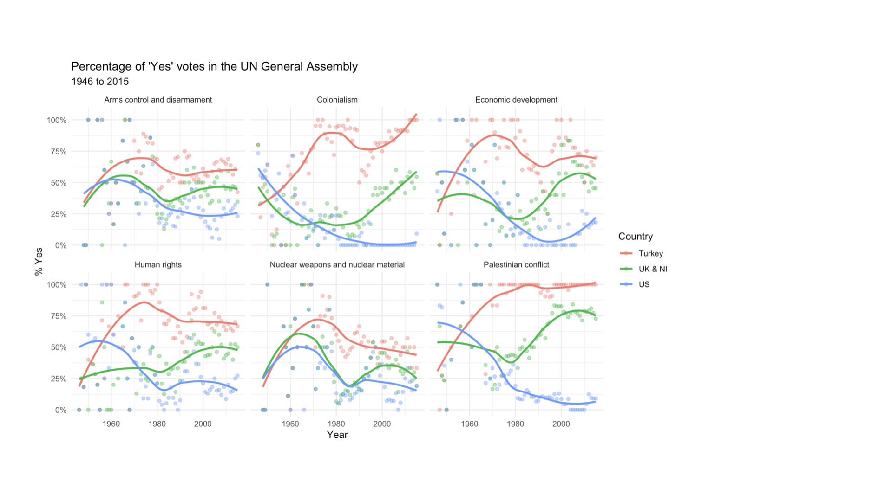
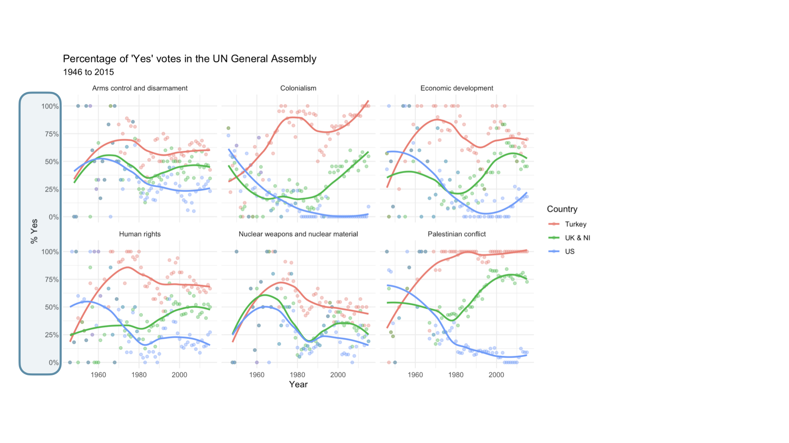
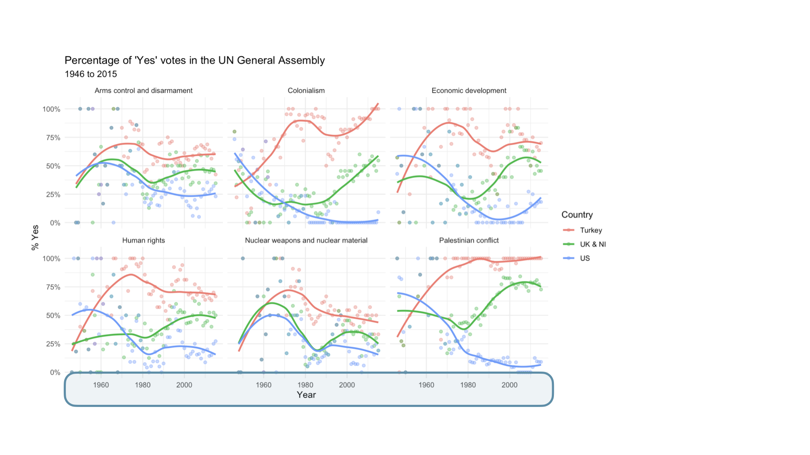
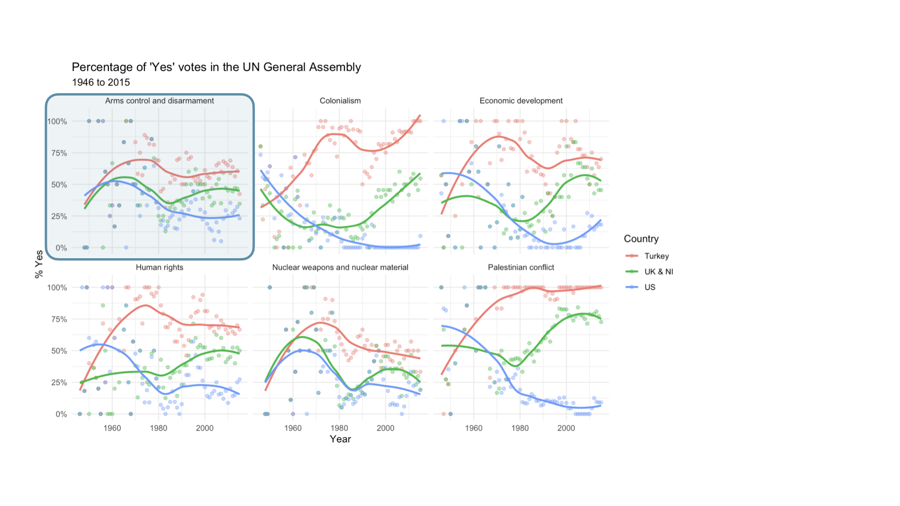
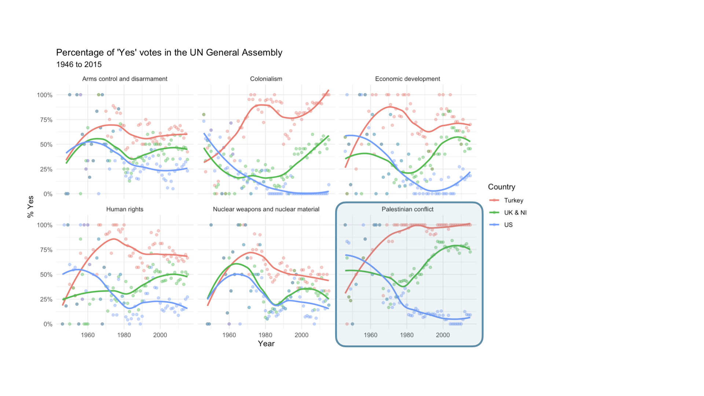
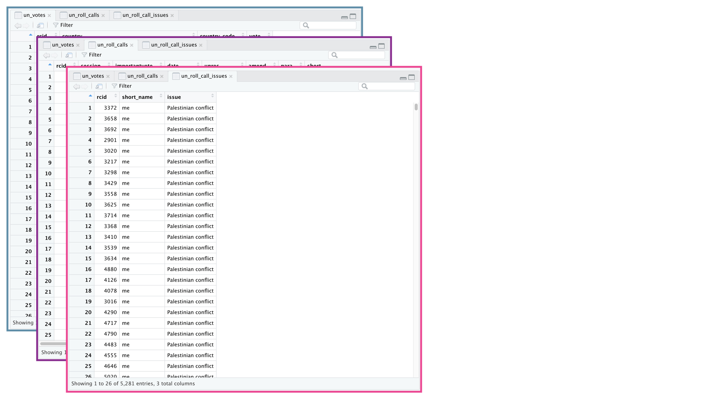
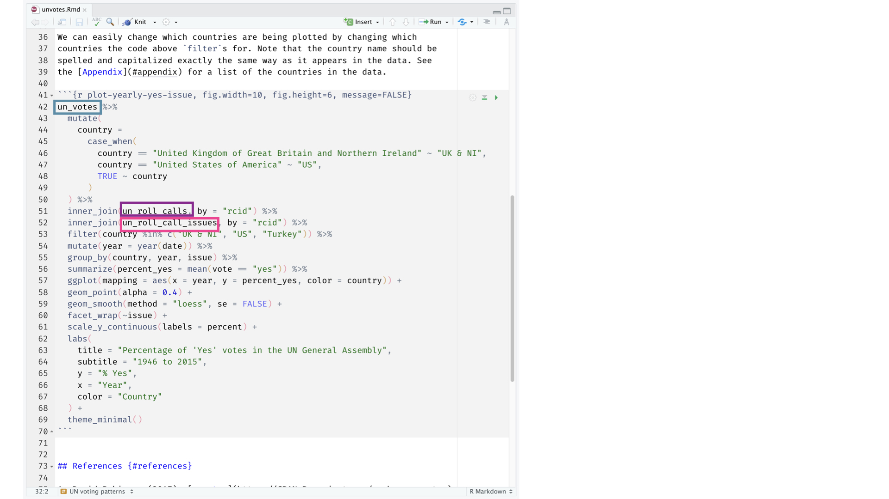
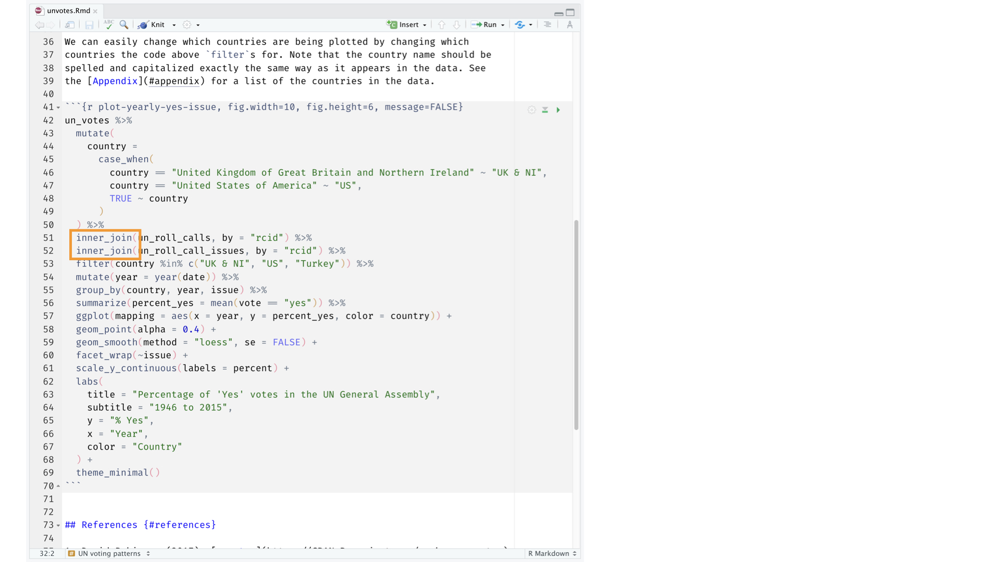
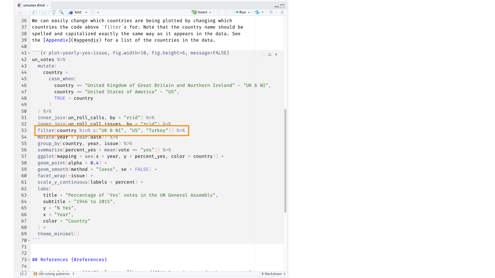
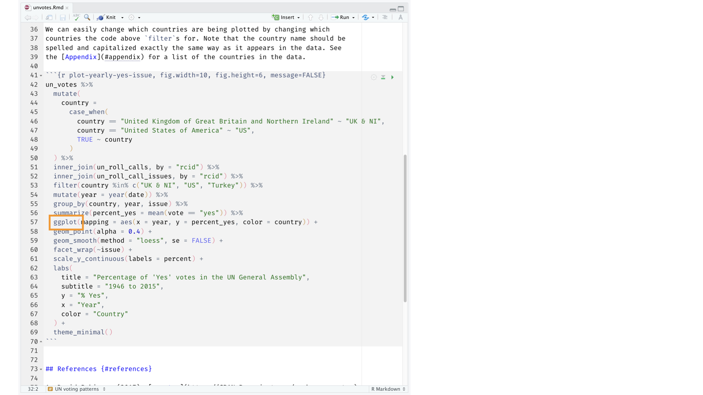
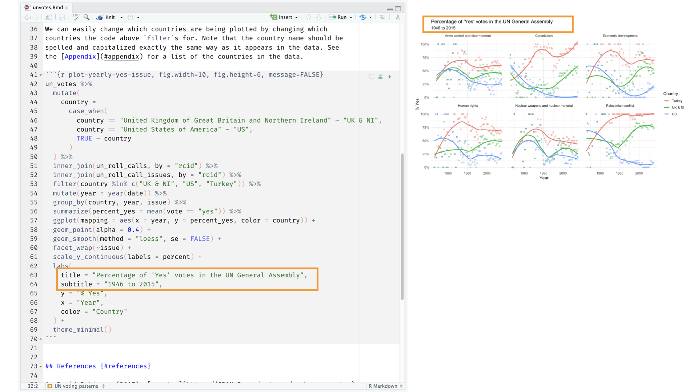
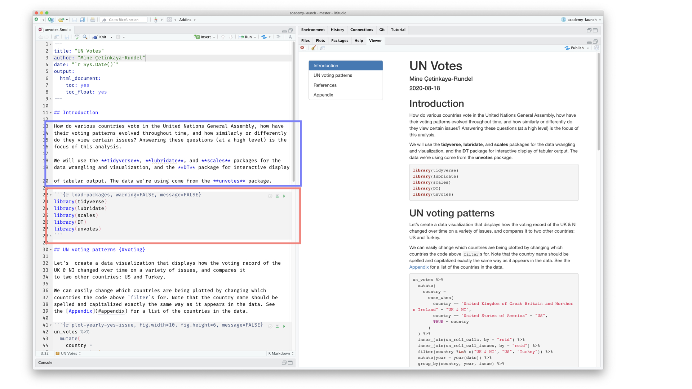
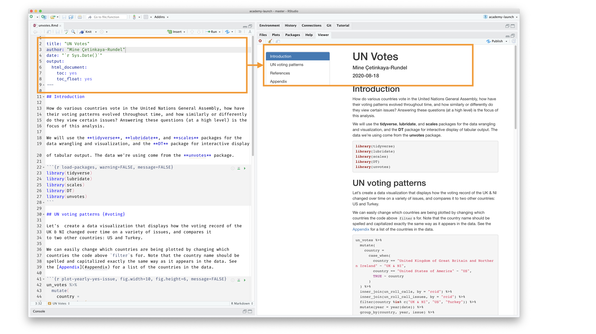